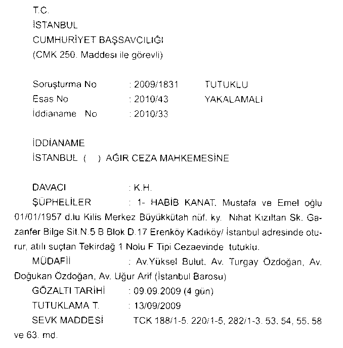

Burada açıkça görüldüğü üzere şüpheli sayısı 6, Emin Bey'in ismi yok ve 7 klasör ve çoğu ses kayıtlarını içeren CD olmak üzere 9 adet eşya ekli. Tarihi de 08.09.2010. Asıl dosya çok daha karmaşık.
İstanbul savcısı Mehmet Berk tarafından tanzim edilen iddianamenin başlangıç kısmı, 09.09.2009 tarihindeki yakalamayı gösteren kısmı:

Görevlerim esnasında ve hala bulunduğum ilde bu dosyanın onda biri ağırlığındaki dosyaları operasyona dönüştürmeden en az bir hafta evvel savcıya tevdi ettiririm. Üstelik bu savcılar davayı uzun süredir izleyen, talimat veren, dinleme izleme kararlarını alan savcılar olur. Yine de onlar bile dosyaya tam hakim olmak için birkaç gün okuyup inceler, sonra talepnamesini yazıp hakim kararını alır, ardından talimatlarını Emniyetin ilgili şubesine yazarlar. En basitinde bile bir haftadan önce operasyon başlayamazken bu kadar karışık, kapsamlı bir dosyaya bir günde kimsenin incelemesi ve akabinde bununla ilgili bir operasyonun gerçekleştirilmesi mümkün değil. Peki böyle bir şey nasıl olabilir?
Denebilir ki, savcılar Emniyetin getirdikleri belge ve kayıtları incelemeden, polise güvendikleri için onların yazdıklarını doğru kabul edip hemen kararlarını yazıyorlar. Fakat dikkat edilirse burada iki husus da bu duruma uymaz. Birincisi, bu tahkikatı Ankara Emniyet Genel Müdürlüğü Kom Dairesi yapmış gözüküyor, dosya İstanbul'da değil. İstanbul polisi konuyu bilmiyor. Bu durum, o günlerde göreve yeni atanmış olan Narkotik Şube Müdürü Cengiz Malbeleği ve bir iki ay önce Şube Müdürü olan Bülent Köksal'ın aynı dosyadaki ifadeleri ile sabit. Ayrıca bu tahkikattaki tüm gizli izleme, takip vs. işlemlerini adli polis olan Kom Dairesi değil, İstihbarat Daire Başkanlığının yaptığı anlaşılmaktadır.
İkinci önemli konu ise Ankara savcısı zanlıları belirleyip görevsizlik kararı verdiği dosyayı İstanbul'a gönderdi. Bu dosyada Emin Arslan'ın adı yoktu. Hatta Ankara savcısı dosyayı inceleme tutanağı tutarak dosya içeriği hakkındaki bilgileri özetlerken Habip Kanat ile bazı Emniyet mensuplarının görüşme ve ilişkilerinin var olmasına rağmen mahiyeti ve kapsamının anlaşılamadığını belirtirken, İstanbul savcısının iki buçuk yıldır dosyayı inceleyen Ankara savcısının tespitleri hilafına dosyaya Emin Bey'i dahil etmesinin makul izahı yoktur.